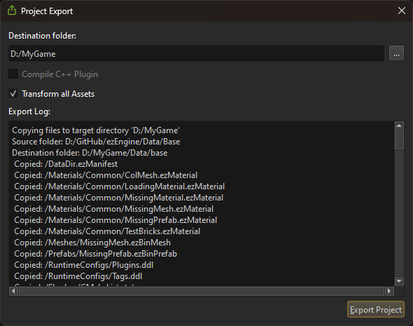

Project Export
Project Export is the step to create a package that contains all the files needed to play your game, excluding the files that are only needed for development.
The data directories of your project contain a lot of files that are only needed during development. Additionally, they are usually stored in various locations, for example the Base directory, which is needed by all games, is located in the SDK folder, whereas your project files probably are located somewhere entirely different. Finally, you also need various binaries (EXE and DLL on Windows) to launch your game, which are again located somewhere different.
The project export feature consolidates all these files into a single directory, so that it is easy to distribute.
Export Project Dialog
To get started with generating a self-contained package of your game, use the project export dialog that you find in the editor under Project > Export Project....

Select an output folder and click Export Project.
Once the export is finished, it will automatically open the folder where the files have been copied to. The export also generates one .bat file for every scene in your project. These scripts launch the respective scene with ezPlayer.
Configuring Project Export
When you export your project for the first time, these files are added to your project directory:
ProjectBinaries.ezExportFilterProjectData.ezExportFilter
The first file is used to determine which binaries should get included in the package. The second file is used to determine which data files should get included.
By default these files #include predefined export filters:
Data\Base\CommonData.ezExportFilterData\Base\CommonBinaries.ezExportFilter
These files set up the rules for typical use-cases. You can extend them in your project config files, or you can remove the #include and fully define your own rules.
The ezExportFilter files contain two sections: [EXCLUDE] and [INCLUDE]. Without any filter, all files are included in the output package.
To exclude certain files or file types, a pattern has to be added to the [EXCLUDE] section. However, sometimes you want to exclude all files of a certain type (e.g. exe) but include a single one regardless (for example your game.exe). In this case, add it to the [INCLUDE] section, to override the exclusion filter.
Each line in the file represents one file path pattern:
- If it starts with a
*, it matches paths that end with this pattern. - If it ends with a
*, it matches paths that start with this pattern. - If it starts and ends with a
*, it matches paths that contain this pattern. - At any other location,
*is not allowed. - All paths are considered to be relative to their respective data directory.
Note:
For inspiration how to use these path patterns, see the files
Data\Base\CommonData.ezExportFilterandData\Base\CommonBinaries.ezExportFilter.
Limitations
- At this time it is not analyzed which plugin DLLs are actually needed, instead all DLLs are included. Edit your
ProjectBinaries.ezExportFilterto control this. - Currently the export step always creates
.batfiles to load each scene with ezPlayer. There is no way to automatically set up something different. - You currently can't automatically execute custom logic (C++ code, or a script) to finalize the package.